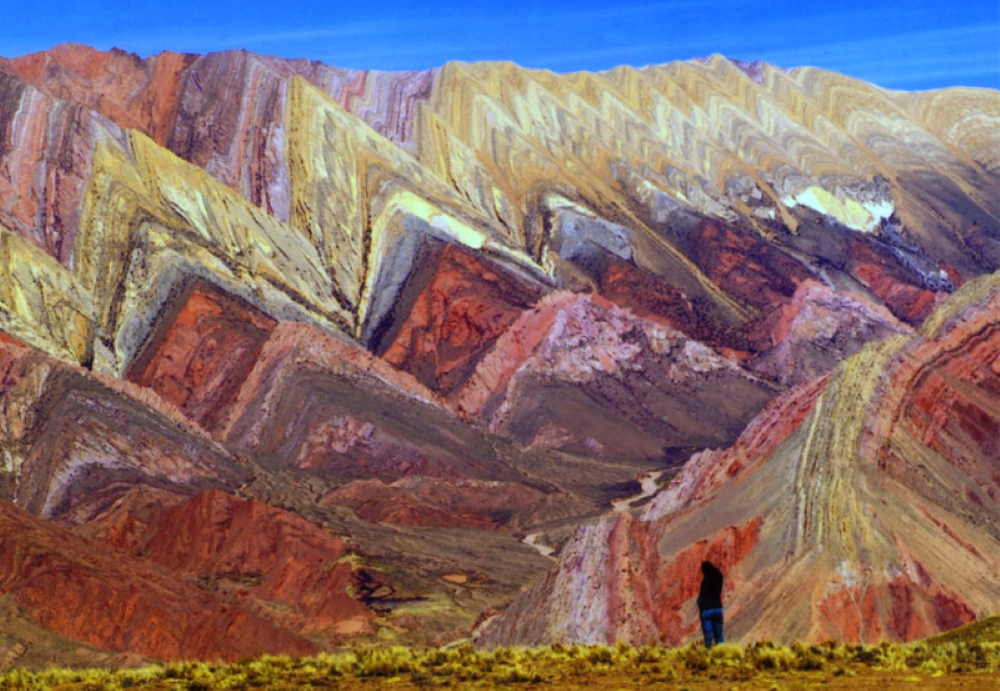
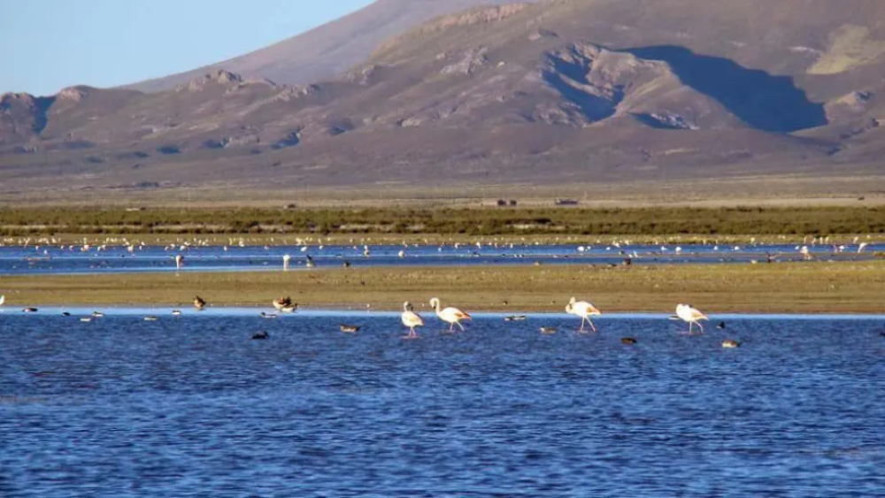

Jujuy, provincia del remoto noroeste de Argentina, se caracteriza por sus espectaculares formaciones rocosas y colinas de la Quebrada de Huamahuaca. Este valle y sus aldeas quechuas se ubican en el norte de la capital provincial y el acceso regional, San Salvador de Jujuy. En el sur del valle, las laderas rocosas del icónico Cerro de los Siete Colores sobresalen de la villa colonial Purmamarca.
Entre los mayores atractivos de Jujuy hay parajes que la UNESCO ha declarado Patrimonio Natural y Cultural de la Humanidad. Es el caso de la Quebrada de Humahuaca, destino repleto de riqueza ambiental y rodeado de pueblos inagotables en cultura.
Los locales aún conservan vestigios de la cultura Inca que en algún tiempo se asentó en el territorio; asimismo es evidente el matiz cultural gaucho que muestran. Estos antecedentes culturales lo hacen ser un pueblo muy cálido y hospitalario. Los jujeños tienen grandes lazos familiares y de amistad, virtud cultural que trasciende a la actividad del turismo haciéndolos distinguirse por su buen servicio.
Su geografía cuenta con formaciones montañosas de fuertes vientos y climas que van de muy calientes a otros tan fríos que incluso causan nieve. Tiene importantes cuerpos de agua y parques dedicados a la conservación de especies animales y vegetales en peligro de extinción. Si crees que es demasiado bueno para ser verdad, lee un poco más para que decidas cuáles lugares visitar en tu viaje a Jujuy y lo compruebes por ti mismo.
Entre los pueblos de Quebrada de Humahuaca es una de las mejores opciones
Tilcara es un bonito pueblo que está entre los principales atractivos turísticos de Jujuy y de Argentina. Está a orillas de la Quebrada Humahuaca, y es uno de los que mejor infraestructura para el turismo tiene de todo el lugar. El corazón de Tilcara está en la Plaza Principal Manuel Álvarez Prado, hogar de la feria artesanal local.
Aunque te puedes hospedar en las pequeñas posadas de los locales, si no sabes en qué hotel quedarte, considera el Hotel Vientonorte o el Hotel Boutique Las Marías, donde solo encontrarás buenos servicios y comodidades. En el último despertarás con el impresionante cerro de los Siete Colores.
San Salvador de Jujuy está a menos de 50 minutos de este destino turístico. Desde ahí puedes tomar un micro o colectivo para llegar a Tilcara haciendo escala en los pintorescos pueblos del recorrido si así lo deseas. Una vez allí, en los restaurantes La Picadita y Los Puestos podrás hacerte una idea de lo buena que es la comida típica de Tilcara y Jujuy.
Hay varios museos en Tilcara que querrás ver como Posta de Hornillos y el Museo Arqueológico Dr. Eduardo Casanova. Por lo demás hay radiantes atractivos naturales que te dejarán sin aliento, como la Garganta del Diablo. Al preparar tu equipaje recuerda que este destino está en una región tan caliente como el desierto del Sahara, así que procura llevar ropa fresca, protector solar e hidratarte muy bien en todo momento.
Las Salinas Grandes de Jujuy es el nombre de la tercera maravilla de sal que existe en Suramérica. Es un gran desierto situado en la serranía de Argentina, fue reconocido como el tercer salar del planeta, por su belleza y gran tamaño. Las Salinas se encuentran a una altura de 3.450 m.s.n.m., en el piso altitudinal de la Puna.
Las Salinas Grandes ofrecen un paisaje único en La Puna argentina. Una inmensa planicie blanca que llega al horizonte.
Las Salinas Grandes con sus asombrosos paisajes se convirtió es uno de los destinos imperdibles de la provincia. Para llegar a las Salinas Grandes se debe atravesar la impresionante Cuesta de Lipán con sus hermosos paisajes.
Las Salinas Grandes se encuentran sobre la Ruta Nacional 52, la misma que llega hasta el Paso de Jama (Paso Internacional Argentina-Chile). El viaje comienza desde la localidad de Purmamarca y antes de llegar a las salinas se debe atravesar la Cuesta de Lipán, con una altura máxima de 4.170 metros. La ruta es asfaltada y se encuentra en muy buen estado.
No hay transporte público a las Salinas Grandes, pero diferentes agencias de viaje organizan excursiones.
Distancias desde Salinas Grandes: Purmamarca 66 km, Tilcara 91 km, Humahuaca 134 km, San Salvador de Jujuy 131 km, Salta 248 km.
La mayoría del tiempo tiene un clima seco, muy frío, la humedad promedia en 47% y la temperatura unos 8,6°C. No tienen estaciones en el año, solo época de lluvia los meses de diciembre a marzo (3°C – 12°C). De abril a noviembre la sequía (-15°C a 25°C). Las escasas lluvias alcanzan de 300 a 400 mm en el año. Formando así un lindo espejo con los fuertes rayos solares, que a su vez crean un verdadero espectáculo.
Podrás visitar este lugar durante cualquier época del año, pero para que aprecies su belleza se recomienda viajar de febrero a abril. Porque debido a las escasas lluvias, se forma una pequeña capa de agua que refleja el tono azul celeste del cielo. Con esto, tendrás la oportunidad de tomar fotografías de ensueños para hacer de ellas tus mejores recuerdos. El horario de atención al público, es a cualquier hora o día de la semana, incluyendo los feriados.
Llamada también “El cerro de catorce colores”, conforman uno de los paisajes más impresionantes de Argentina. Estas serranías están compuestas de diferentes minerales, lo que les permitió ser parte de una formación calcárea nombrada Yacoraite. Vienen siendo un grupo de fajas montañosas intercaladas, con una variedad de colores que por su belleza atrapan al visitante.
Se dice que el origen del nombre “Hornocal” viene de la unión de las palabras horno y cal. Esto es debido a que en la época colonial había una comunidad en este sitio que producía cal.
Dichas serranías están situadas a 25 kilómetros de Humahuaca, provincia de Jujuy, a una altura de 4.761 m.s.n.m. Se extienden desde Perú y bajan por Bolivia para luego cruzar Argentina. Para disfrutar de sus esplendorosos tonos, que van entre ocres, amarillos, morados, verdes, naranja, rojizos y blanco, entre otros.
Si vas en automóvil, debes ir con mucho cuidado porque la vía es muy angosta y transitan los buses turísticos. Debes abrigarte, y cada cierto tiempo parar y bajar del auto para que el cuerpo se adapte a la altura.
Yala es una localidad de un pequeño pueblo y municipio de la provincia de Jujuy, en Argentina. Está ubicada a 15 km de la ciudad de San Salvador de Jujuy, en el departamento Doctor Manuel Belgrano. Está rodeado de cerros cubiertos de vegetación, donde se destacan las lagunas. Es un lindo lugar, preciso para disfrutar de la naturaleza. El pueblo se encuentra sobre la ruta 9 y el río grande.
Yala es conocida por sus hermosas casas de verano, donde puedes descansar y disfrutar del maravilloso paisaje. Puedes visitar Fincas, campings y hasta clubes con la seguridad de que vas a pasar momentos felices con la familia. Ahora, si quieres saber lo que puedes hacer allí, continúa leyendo hasta el final. Tenemos, por ejemplo, el Parque Potrero de Yala, la reserva natural más antigua de la provincia.
Por su gran valor ecológico es un escenario maravilloso, posee paisajes insuperables que realmente motivan al turista. Por la ruta Provincial 4, que comunica a Ternas de Reyes con el pueblo de Yala, existen tres lagunas. Rodeo, Comedero y Desaguadero, que son las más visitadas por los excursionistas. Están rodeadas de una vasta cadena de hermosos bosques. Pero estas no son las únicas, hay dos más, la Negra y Noque.
Además, cuentan con numerosos caminos para practicar trekkings, “trails” de senderismo y mountainbike. El parque tiene llamativas cascadas que cruzan la ruta a lo largo del camino. Disfruta de gran diversidad de flora y fauna por ser la primera reserva natural de Jujuy. Debido a eso, son pocas las actividades de bajo impacto que se pueden llevar a cabo allí.
Es una asombrosa superficie de más de 350.000 hectáreas de la Puna Argentina. La Laguna de los Pozuelos, fue declarada Monumento Nacional en la década del año 1980, con la finalidad de proteger su ecosistema. Esta laguna cuenta con unas 15 mil hectáreas aproximadamente, en las temporadas de lluvia. Sirve de hábitat a numerosas aves, tiene una privilegiada posición en el cuadro de humedales a nivel internacional.
Es un sitio ideal para disfrutar y relajarse. Aquí tendrás acceso a servicios de restaurant, estacionamiento, alquiler de albercas para el deleite de toda la familia, y palapas con cómodas habitaciones para tener un buen descanso.
Es un lugar maravilloso, te atrapará la amplia variedad de aves, la cantidad de fauna terrestre y acuática. Podrás recrearte con los bellos paisajes adornados por manglares, flores acuáticas y hermosas palmeras. Y, por si fuera poco, verás, no solo la laguna de agua dulce sino playa de agua salada con su fauna respectiva. Así que, anímate a visitarnos, no te arrepentirás de tan excelente decisión.